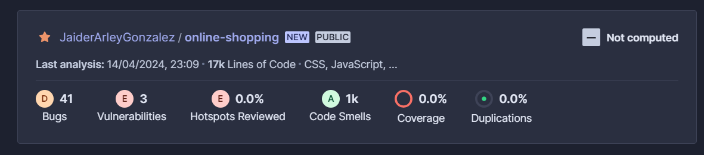
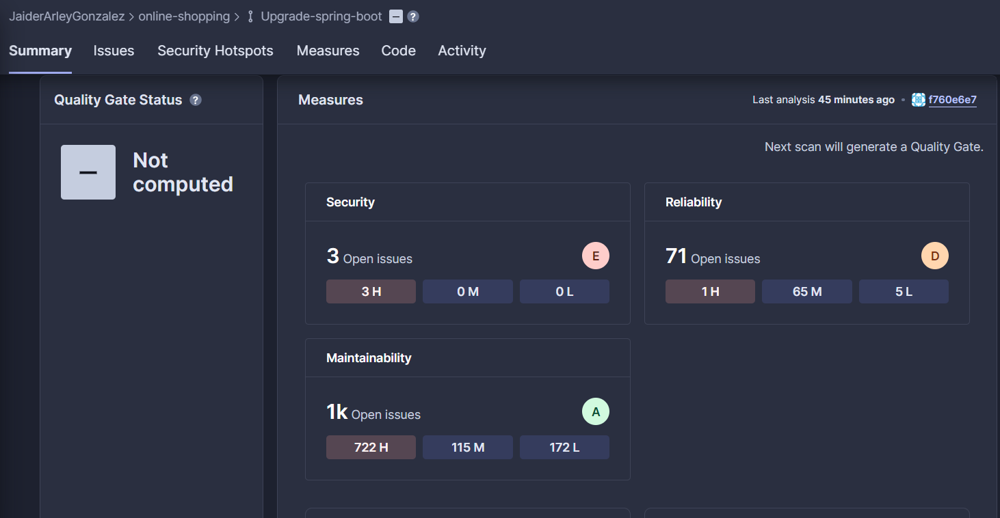
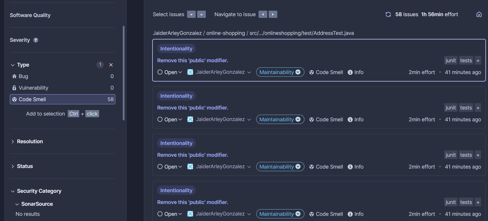
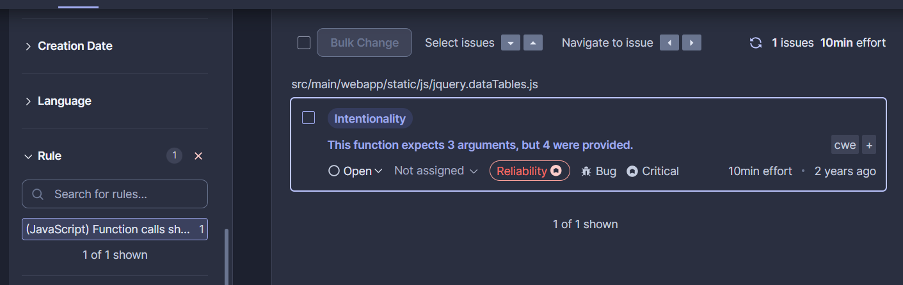
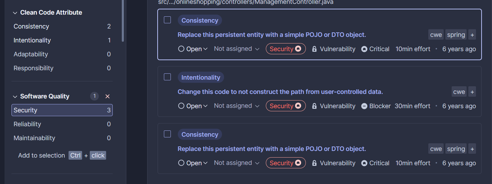
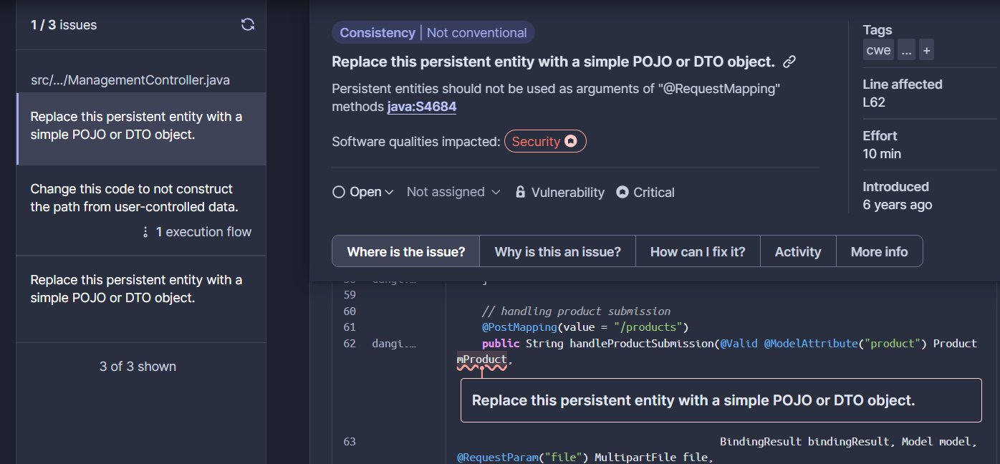
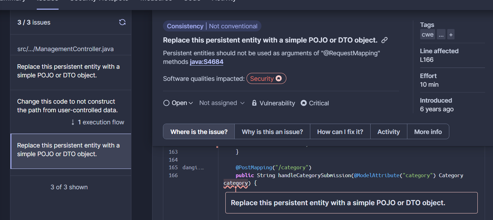
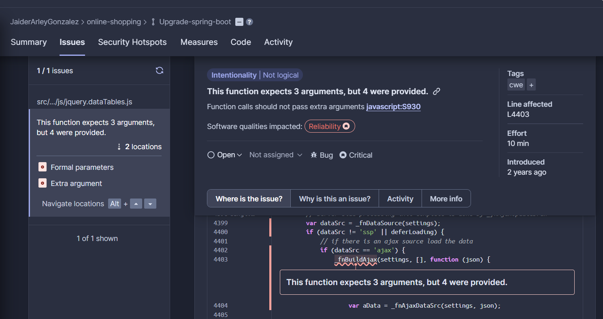

Análisis con Herramienta SonarCloud
SonarCloud es un servicio en la nube que permite analizar el código fuente para detectar problemas de calidad, seguridad y mantenibilidad. Al integrarse con plataformas de desarrollo como GitHub, facilita la integración continua y proporciona herramientas para mejorar el código.
Instalación
Para integrar SonarCloud con GitHub, debes configurar un secreto que contenga el token de acceso a SonarCloud. Aquí están los pasos para hacerlo:
- Dirígete a la pestaña "Settings" (Configuración) del repositorio en GitHub.
- Haz clic en "Secrets" en el menú de la izquierda.
- En "Secrets", selecciona "New repository secret" (Nuevo secreto de repositorio).
- En "Name", ingresa `SONAR_TOKEN`.
- En "Value", ingresa el token de acceso a SonarCloud.
Configuración del Archivo de Construcción
Dependiendo de la tecnología de construcción, debes actualizar el archivo de construcción para permitir el análisis de SonarCloud.
Para Proyectos Maven:
Abre el archivo `pom.xml` y agrega las siguientes propiedades:
<properties>
<sonar.organization>tu_organizacion</sonar.organization>
<sonar.host.url>https://sonarcloud.io</sonar.host.url>
</properties>
Archivo .github/workflows/build.yml
En este archivo YAML, configura las acciones de GitHub para ejecutar el análisis de SonarCloud.
name: SonarCloud
on:
push:
branches:
- main
jobs:
build:
name: Compilar y analizar
runs-on: ubuntu-latest
steps:
- uses: actions/checkout@v3
- name: Configurar JDK 17
uses: actions/setup-java@v3
- name: Compilar y analizar
env:
SONAR_TOKEN: ${{ secrets.SONAR_TOKEN }}
run: mvn clean verify org.sonarsource.scanner.maven:sonar-maven-plugin:sonar
¿Qué podemos ver ahora?
SonarCloud nos permite analizar el código fuente y obtener información detallada sobre la calidad y seguridad del proyecto.
  1. Análisis del Código Fuente:
SonarCloud examina la complejidad del código, violaciones de estándares de codificación y duplicación de código. Permite a los equipos de desarrollo identificar problemas de calidad y seguridad.
2. Detección de Problemas de Calidad y Seguridad:
SonarCloud detecta vulnerabilidades de seguridad, errores de programación y posibles cuellos de botella de rendimiento. Ofrece una visión general de la salud del proyecto.  
3. Métricas de Calidad del Código:
SonarCloud genera métricas detalladas sobre la calidad del código, como el índice de mantenibilidad, la complejidad ciclomática y la cobertura de pruebas.
Implementación con Copilot
Copilot es una herramienta de programación asistida por inteligencia artificial que ayuda a escribir código de manera más eficiente mediante sugerencias automáticas. Se ha utilizado para refactorizaciones y pruebas unitarias en este proyecto.
Propósito
El propósito de Copilot es agilizar el proceso de escritura de código, reducir errores y mejorar la calidad del código. Facilita la implementación de pruebas unitarias y refactorización del código existente.
Logros
Algunos de los logros obtenidos con Copilot:
- Aumento de la productividad: Copilot acelera la escritura de código al proporcionar sugerencias relevantes en tiempo real.
- Mejora de la calidad del código: Copilot sigue mejores prácticas de codificación, mejorando la legibilidad y mantenibilidad.
- Reducción de errores: Al generar automáticamente código basado en el contexto, Copilot ayuda a reducir errores humanos.
- Facilitación del aprendizaje: Copilot proporciona sugerencias que permiten a los desarrolladores aprender nuevas técnicas y enfoques de codificación.
Conclusión
Con la implementación de SonarCloud y Copilot, el proyecto de refactorización de compras en línea ha mejorado en calidad y productividad. SonarCloud ayuda a mantener un código limpio y seguro, mientras que Copilot acelera el proceso de desarrollo y reduce errores. Juntos, estas herramientas contribuyen a una mejora continua y a la creación de software más seguro y confiable.